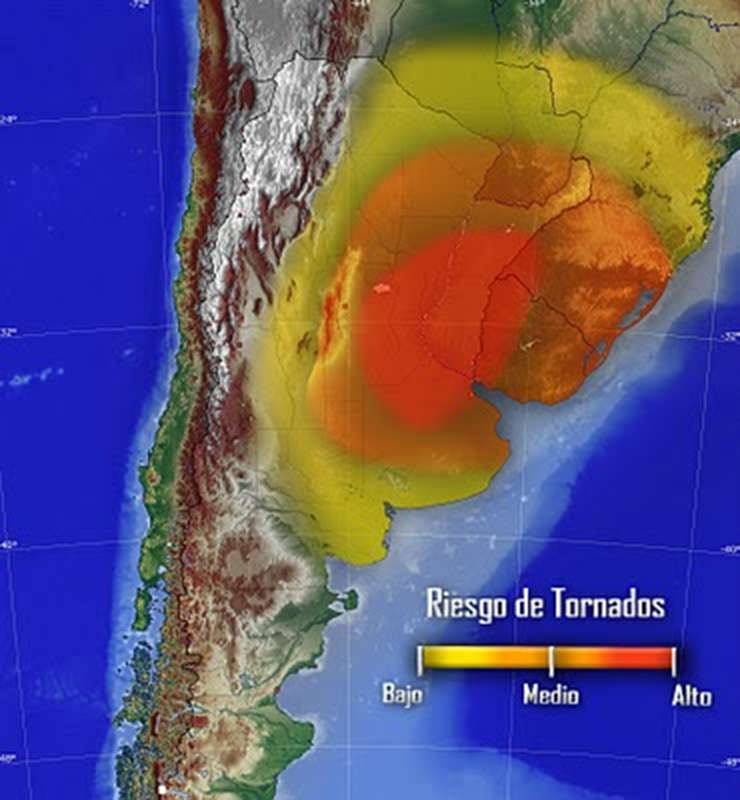

Policía baleó a ladrón que intentó robarle la moto
Por Mariana Arli
Ocurrió en Moreno, Provincia de Buenos Aires. Un efectivo de la Policía Bonaerense detuvo a balazos a
un
ladrón que intentó robarle la moto. El efectivo se encontraba en franco de servicio, manejando su
moto
Honda Twister, se detuvo en un local y antes de bajarse, un auto frenó en el cordón y un hombre
descendió casualmente de este, tras esto se acercó al efectivo...
Lea el artículo completo aquí
Incendio mortal en La Pampa
Por Mariano Olas
El incendio iniciado el pasado 20 de agosto de este año sigue expandiendose por toda La Pampa. Los
dueños
de las tierras han logrado salvar varios de sus animales y cosechas, pero el fuego ha tomado sus
casas y
sus campos. Los bomberos trabajan en el lugar y, aunque el fuego ha sido reducido desde la semana
pasada, aún queda mucho por hacer. La capital corre peligro de...
Lea el artículo completo aquí

¿Tornado en Buenos Aires?
Por Juan Weltz
De acuerdo con varios meteorólogos expertos, un tornado podría llegar a Buenos Aires el próximo 10 de
septiembre. Las ciudades están en total alerta y se han habilitado edificios para ser utilizados de
refugios. Las autoridades transportan constantemente provisiones a estos refugios. Se estima que
afectaría a gran parte de microcentro, destruyendo...
Lea el artículo completo aquí